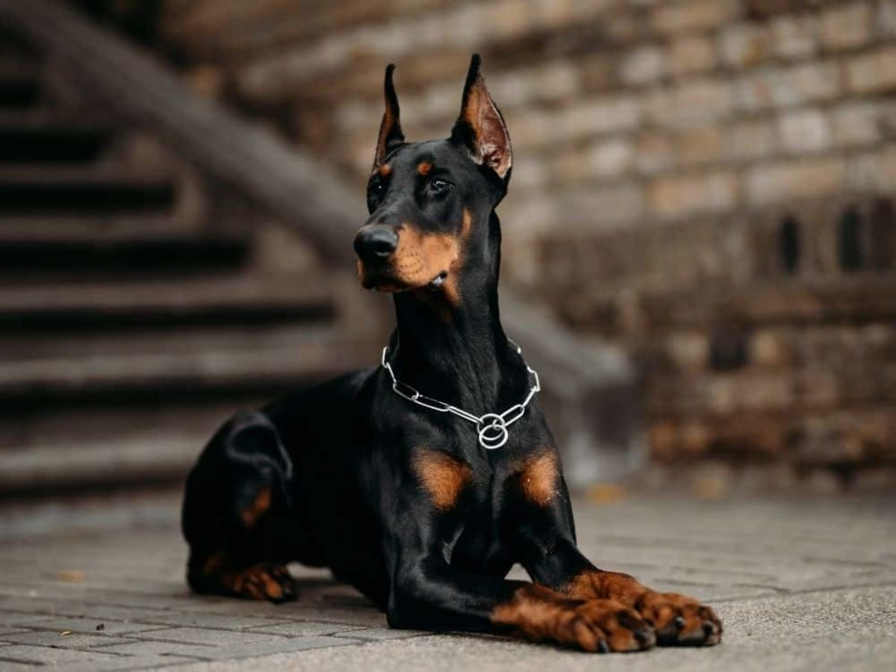

The majority of information derived from this website is accredited to the American Kennel Club, click the image below the find out more.
There are a variety of beautiful and unique dog breeds for every type of person! Each has their own attributes specific for certain social settings, natural environments, and jobs! Perhaps this list could help you to explore your options of a best friend. There truly isn't something that matches the intimate relationship between a dog and its owner.


According to the American Kennel Club, boxers are incredibly athletic dogs that gracefully accept their roles as protector when placed in a family-environment. Boxers, although typically very kind, are best to be socialized with other dogs from the age of an infant. Overall, a boxer is not a bad pick for a healthy adult who wants a social and exhuberant dog!

Doberman's are extremely excellent in terms of their physique. Domineering the world with their strong personalities and tall stature, a Doberman Pinscher has been popularly known as a guard dog. With strong hearing, fast muscles, and good build, a Doberman is not to be messed with. According to the American Kennel Club, "Dobermans are compactly built dogs 'muscular, fast, and powerful' standing between 24 to 28 inches at the shoulder. The body is sleek but substantial, and is covered with a glistening coat of black, blue, red, or fawn, with rust markings. These elegant qualities, combined with a noble wedge-shaped head and an easy, athletic way of moving, have earned Dobermans a reputation as royalty in the canine kingdom. A well-conditioned Doberman on patrol will deter all but the most foolish intruder."


According to the American Kennel Club, "Poodles come in three size varieties: Standards should be more than 15 inches tall at the shoulder; Miniatures are 15 inches or under; Toys stand no more than 10 inches. All three varieties have the same build and proportions. At dog shows, Poodles are usually seen in the elaborate Continental Clip. Most pet owners prefer the simpler Sporting Clip, in which the coat is shorn to follow the outline of the squarely built, smoothly muscled body. Forget those old stereotypes of Poodles as sissy dogs. Poodles are eager, athletic, and wickedly smart “real dogs” of remarkable versatility. The Standard, with his greater size and strength, is the best all-around athlete of the family, but all Poodles can be trained with great success."

| Boxers | Doberman Pinschers | Poodles | |
|---|---|---|---|
| Size | Medium | Large | Small-Medium |
| Agreeableness with Other Dogs | Agreeable | Need Socializing | Agreeable |
| Shedding | Moderate – High | Moderate | No Shedding |